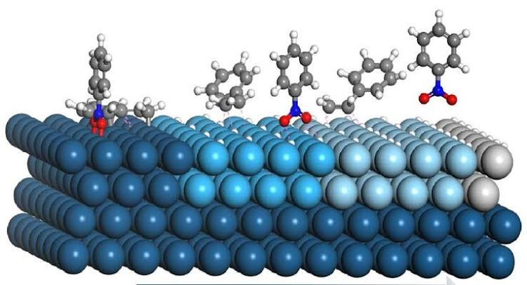

Computational catalyst design for PFAS remediation
An atomistic screening workflow that combines machine-learned interatomic potentials with first-principles calculations to study how PFAS molecules interact with catalytic metal surfaces.
Which surface environments control PFAS adsorption and activation?
PFAS remediation by heterogeneous catalysis depends on molecular orientation, surface structure, adsorption strength, and local atomic environment. Exhaustively exploring those configurations with first-principles calculations alone is expensive.

Multi-fidelity atomistic screening
The workflow is designed to balance exploration speed with first-principles reliability.
Adsorbate–surface configurations
Generate physically meaningful PFAS adsorption structures across metal surfaces, orientations, and local adsorption environments.
Machine-learned interatomic potentials
Use ML interatomic potentials to relax and compare many candidate configurations at far lower cost than a fully first-principles sweep.
First-principles calculations
Run DFT/VASP calculations on selected configurations to validate energetic trends and quantify the accuracy of the accelerated workflow.
Structure–energetics relationships
Relate adsorption energies, surface environment, geometry, and other descriptors to identify the atomic-scale factors governing interaction strength.
Speed for search, physics for confidence
ML potentials expand the search space
A machine-learned potential makes it practical to examine many more molecular placements and relaxed structures than would be feasible with DFT alone.
DFT provides a first-principles reference
Selected structures are recalculated with first-principles methods so the accelerated model remains tied to physically meaningful energetics rather than becoming a purely empirical screen.
From adsorption energy to catalytic insight
Where does adsorption strengthen?
Compare local surface environments to determine which atomic arrangements most strongly influence PFAS binding.
When does the accelerated model agree?
Benchmark ML-potential predictions against first-principles calculations using matched structures and consistent energetic definitions.
What can guide screening?
Identify interpretable geometric and energetic descriptors that can help prioritize promising catalyst environments.